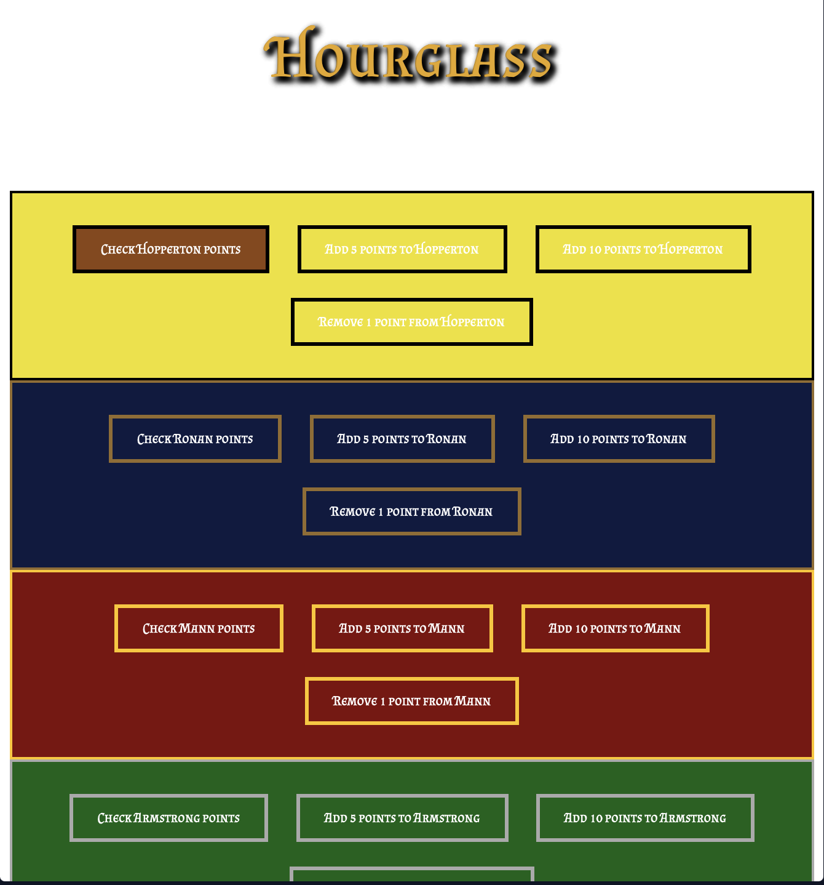

Lock In
A dynamic web based aim trainer that can be easily used to practice and sharpen your
hand-eye coordination.
Lock In has customizable features to cater to your specific
needs, and includes real time performance metrics to monitor your skills.
a>

Mr. B
A Discord application built for St. Michael's Choir School to act as a moderator for the
school server. Mr B has a variety of security features, such as detecting inapropriate
pictures or text, as well as some fun features, like playing music and 8 ball.

Hourglass
A Harry Potter themed counter built for the staff body of St. Michael's Choir School
in order to more easily add, subtract, and keep track house points.